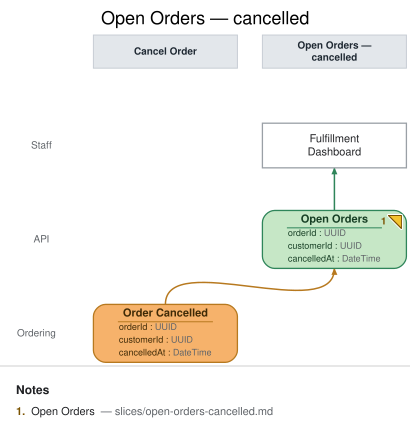

Open Orders — cancelled
State View · implemented
{kind=link}
| Kind | Name | Detail |
|---|---|---|
| view | Open Orders | from Order Cancelled · again · { orderId: UUID, customerId: UUID, cancelledAt: DateTime } |
| ui | Fulfillment Dashboard | @Staff |
Slice: Open Orders — cancelled

Intent
Once a customer can self-serve cancel (slices/cancel-order.md), the staff fulfillment board
needs to stop showing that order as something to prepare and ship. This slice is a later
instance of the same Open Orders read model (view Open Orders again from "Order Cancelled")
— not a new view. It exists to demonstrate the repeated-view rule live: this instance and the
earlier Open Orders instance (slices/open-orders.md) share a name and are never connected to
one another; continuity is implied only by that shared name, and the event each instance folds is
what shows the view changing over time.
Trigger & Actor
No user action triggers this slice directly — it's a projection that updates automatically
whenever Order Cancelled (slices/cancel-order.md) is recorded. Staff consult the same
Fulfillment Dashboard on demand; this slice owns its own ui element per the repeated-view
rule (each instance gets its own consumer), even though staff experience it as one continuously
updating board, not two.
Read Model / View
- View:
Open Orders(repeated instance) built from event:Order Cancelled - Consumed by:
Fulfillment Dashboard@Staff (this slice's ownui, distinct from the earlier instance'suielement, per the repeated-view rule) - Freshness / consistency expectation: eventual — same as the earlier instance
(
slices/open-orders.md): staff read a projection that lags event recording by however long the projector takes to catch up.
Invariants / Business Rules
- INV-OOC-1: The fold removes (or marks) the cancelled order from the staff board: when
Order Cancelledis projected for anorderIdwith an existing row (from the earlierOrder Placedfold), that row is removed from the "needs fulfillment" board — a cancelled order is no longer something staff should prepare or ship. Design call: this doc models the fold as a removal, not a "cancelled" status flag left visible on the board, because an already-cancelled order carries no further fulfillment action for staff to take; a full order-history view (that would want to keep cancelled rows visible with a status) is a distinct, unmodeled read model. - INV-OOC-2 (idempotent): Re-projecting the same
Order Cancelledevent (redelivery, replay, projector restart) never re-removes an already-removed row, errors, or has any additional effect — removal is idempotent the same way the earlier instance's fold is (slices/open-orders.md's INV-OO-1).
Scenarios (Given / When / Then)
Order Cancelledlands for an open order — Given anOpen Ordersrow exists fororderIdO1(from an earlierOrder Placedfold, perslices/open-orders.md), WhenOrder Cancelledis projected forO1, Then theO1row is removed from the fulfillment board.- Redelivered event (INV-OOC-2) — Given the
O1row has already been removed by a priorOrder Cancelledprojection, When that same event is redelivered to the projector (at-least-once delivery, replay), Then nothing further happens — no error, no second effect. - Cancellation before capture reaches the board — Given
O1was open (nocapturedAtyet) when it was cancelled, WhenOrder Cancelledis projected, ThenO1is removed the same way as a captured order would be — this fold doesn't distinguish by the row's priorcapturedAtstate, since INV-CO-1 already guaranteesOrder Cancelledis never recorded once payment has captured.
Alternate & Error Flows
- Out-of-order delivery: if
Order Cancelledwere somehow projected before its order'sOrder Placed(not expected in-order, but a projector should be defensive), the fold has no row to remove yet; it records that the order is cancelled so the eventualOrder Placedprojection can skip creating a row for it, rather than erroring on a missing row. - Idempotency mechanism: the projector folds by
orderId, the same keyslices/open-orders.mduses, so replay/redelivery is naturally idempotent (INV-OOC-2) as long as "remove" is itself an idempotent operation (removing an already-absent row is a no-op, not an error).
Non-Functional Requirements
- Security / authz: visible to Staff only (fulfillment/ops role); not exposed to Customers — same as the earlier instance.
- PII & compliance: carries only
orderIdandcustomerId(a reference, not raw PII) as read fromOrder Cancelled; no payment instrument data. - Performance / SLA: none beyond ordinary dashboard-refresh latency for this demo.
Dependencies & Read Models Affected
- Upstream events this slice relies on:
Order Cancelled(slices/cancel-order.md). - Downstream read models / slices affected: none — this is a terminal read model for the Staff
persona, the same as the earlier
Open Ordersinstance.
Open Questions
- Does the base
Open Ordersview (slices/open-orders.md) need to change now that cancellation exists? Resolved: no — that doc's own Open Question already deferred cancellation explicitly and remains accurate as written; this repeated instance is the whole change, not an edit to the earlier one (see the Intent section above andrepeated-views-never-connect).